Nutrition Benefits of Plant-Based Diets
Health benefits of plant-based nutrition. Plant based diets allow for faster muscle recovery times because meat and dairy have inflammatory effects. Plant-based eaters get more antioxidants, which help neutralize free radicals. Free radicals lead to muscle fatigue, reduced athletic performance, and impaired recovery. Plant-based diets are usually lower in fat and higher in fiber which results in reduced body fat. Reduced body fat means that athletes can more efficiently use oxygen during exercise. Plant-based diets are better for cardiovascular health.
 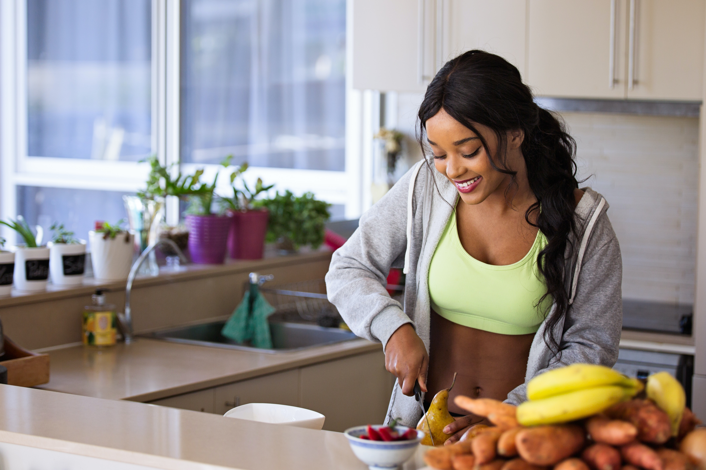
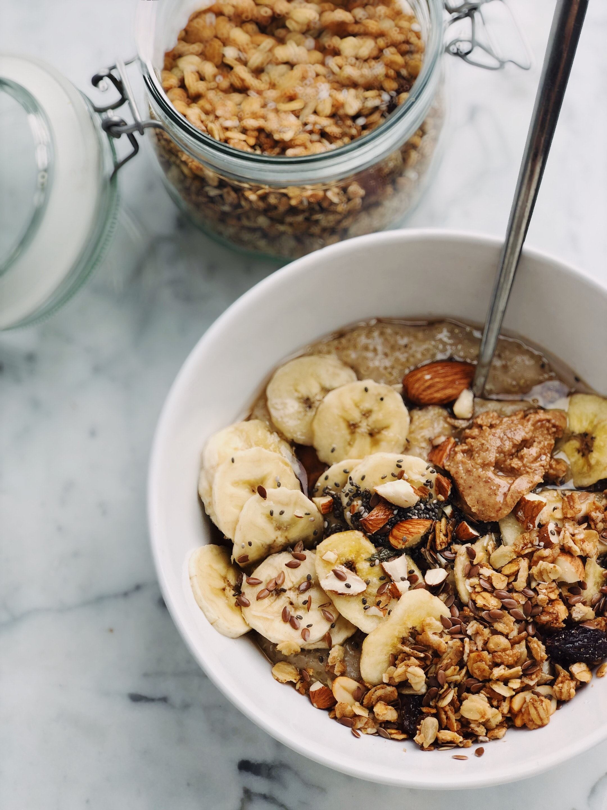
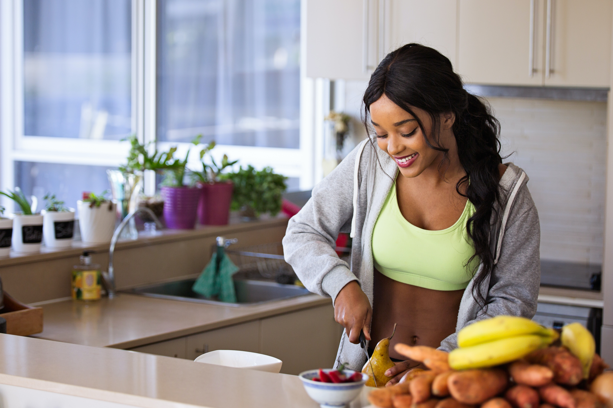
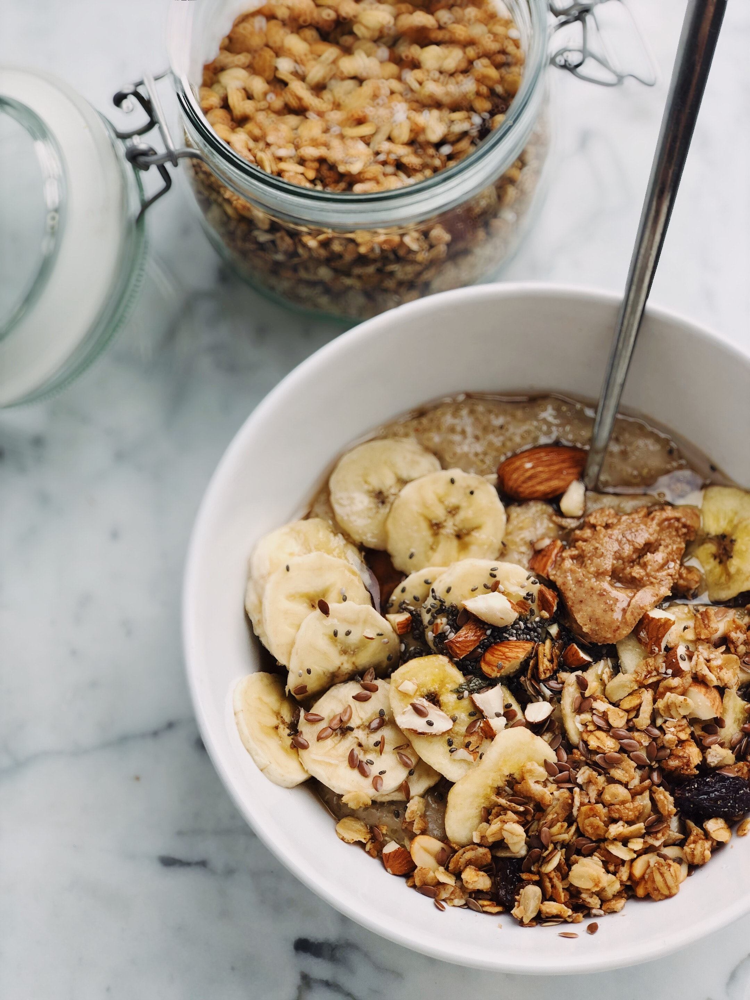

 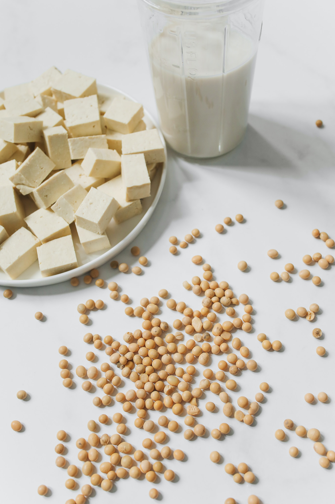
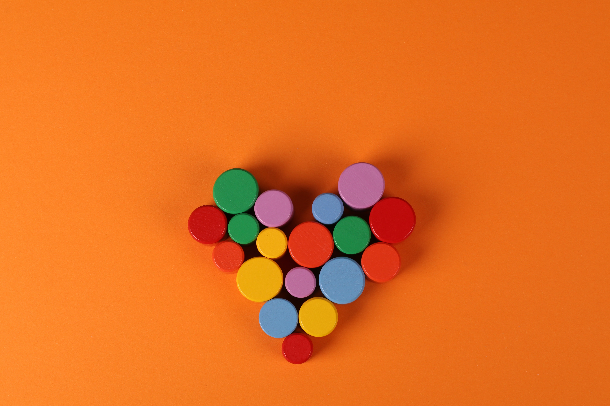
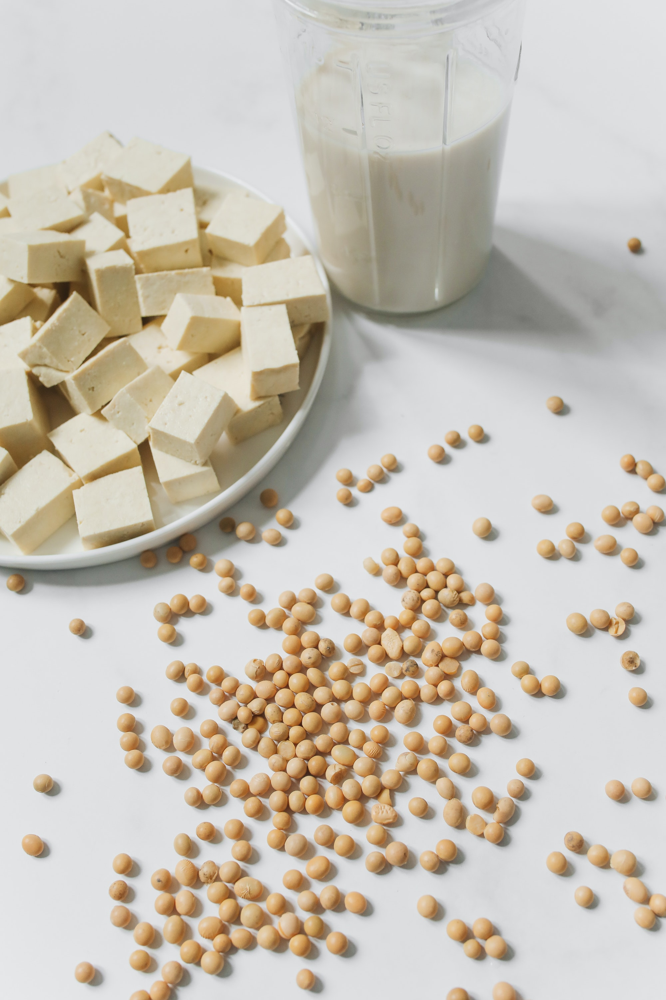
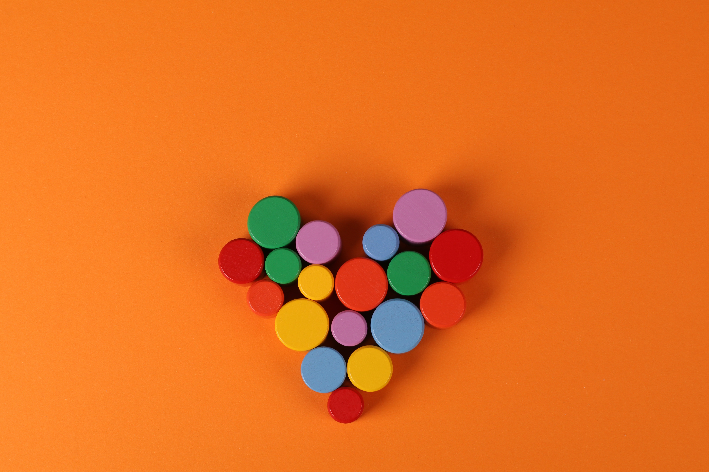


These benefits are why many of the worlds greatest athletes have switched to plant based diets:
- NBA Star Kyrie Irving
- GOAT Endurance Runner Scott Jurek
- Tennis Champion Venus Williams
- Molly Cameron - The only trans athlete to compete in the UCI Cyclo-Cross World Cup.
- Colin Kaepernick - NFL
- Lewis Hamilton - All Time Greatest Formula One Racers
- Sarah Stewart - Silvermedalist Paralympics athlete
Below are pictures taken by me and links to some of my favorite high-protein recipes inspired by vegan chefs that help fuel my runs:
High-protein chili
You will need the following ingredients: 3 cans of beans, diced tomatoes, tomato paste, quinoa, red peppers, onions, and butternut squash. There are lots of spices, so be sure to get all of them because they are all essential: cumin, smoked paprika, chili flakes, chili powder, cayenne peper, salt, pepper. Saute the onions, peppers, and tomatoes in a pressure cooker with 1 tablespoon of olive oil. Then add the vegetable broth, butternut squash, quinoa, 3 cans of beans, tomato paste, all into the pressure cooker. Cook for 8 minutes in pressure cooker. Becareful when opening the pressure pot! Enjoy! Serve on rice, with nutrtitional yeast and cilantro as garnish. Super healthy high protein vegan meal prep plan.
Chickpea and Kale Stiry Fry
This vegan Kale Chickpea Stir Fry is delicious, quick to make and can be easily dished with vegetables, rice, and other foods for a healthy well round and balanced meal. I love it so much that I actually meal prep it atleast 2 times a week because it is soooo faster to prep while still being healthy and saving movneh! Despite eating it so often, it's still my go to for the past year and I have not gotten sick of it yet! Everytime I make it for people, they are always amazed by how simple the dish really is to make, since it is so tasty and nutritious. Saute half a diced onion, in sesame oil. Once onion is golden, add one can of chickpeas, cayenne pepper, paprika, salt and pepper, two tablespoons of water into pan. Stirfry for about 5 mins until chickpeas look toasted. Add 2 handfuls of cut Kale and stirfry with the rest until the Kale gets wilted. Avoided soggy Kale by monitoring the skillet into the Kale gets just barely wilted, not soggy! Nothing is worse than soggy kale.
Tofu and Potato Curry
Pat the tofu dry cut it into 1/2 inch cubes. Cut potatoes into bite-sized cubes. Some people like to peel their potatoes, but I like keeping the skins for the nutritional fiber! Fry the tofu on medium heat until golden on all sides. Saute onion for 5 mins until brown. Add finely minced garlic and yellow curry paste into the mixture. Then add the potatoes, carrots, and any other vegetables into the mixture. I like to add lentils for an exttra protein boost! Add coconutmilk then bring everything to a boil. Add salt and pepper to taste. As a side dish, I like to have either basmati rice or Naan bread, but if I'm feeling extra need for protein, then I'll cook some quinoa for a protein punch. Tip: Although the curry will still be tasty without coconutmilk, something about the coconut milk makes the curry so much tastier and creamier. However, if you are looking to eat less fat, then skip the coconutmilk or look to reduced fat coconutmilk alternatives.
 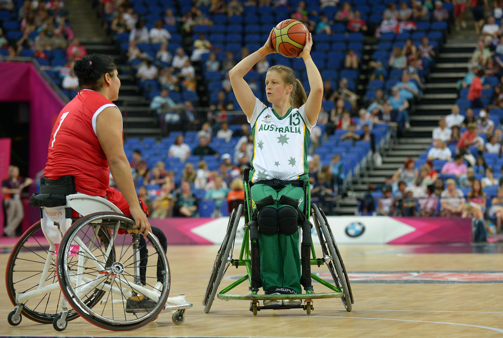
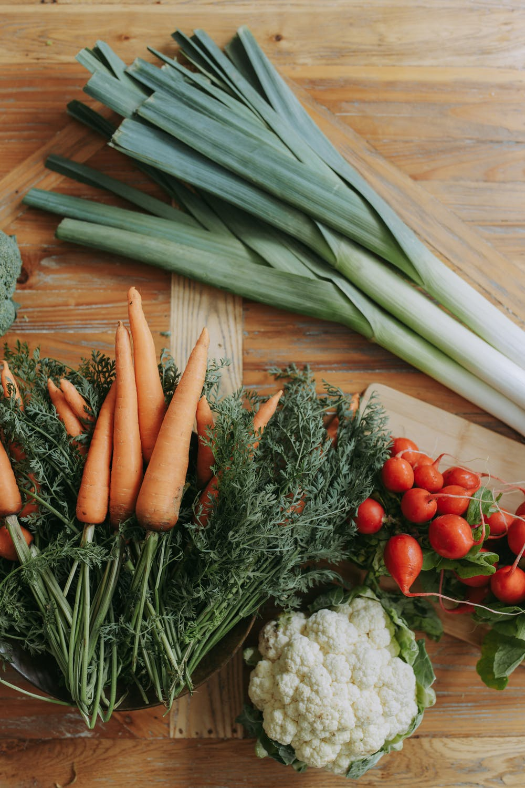
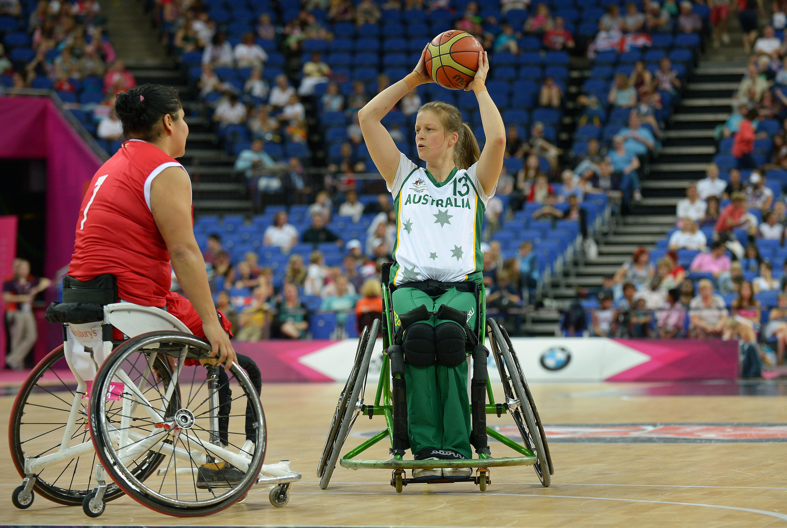
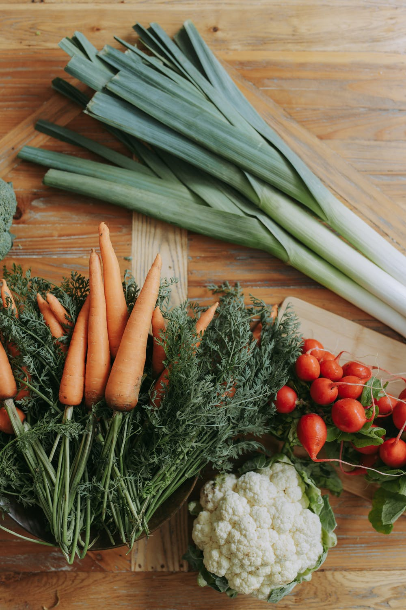
Images courtesy of Pexels.com